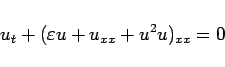

Inhalt Index DeskTop Bronstein

 Differentialgleichungen Partielle Differentialgleichungen Nichtlineare partielle Differentialgleichungen, Solitonen
Differentialgleichungen Partielle Differentialgleichungen Nichtlineare partielle Differentialgleichungen, Solitonen


|  | (9.163) |
tritt bei der Beschreibung der spinodalen Entmischung auf. Für  bzw.
bzw.  treten ganz verschiedene Lösungstypen auf.
treten ganz verschiedene Lösungstypen auf.